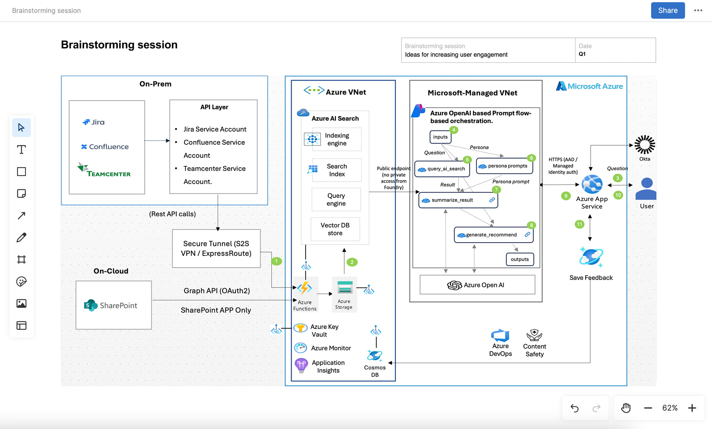
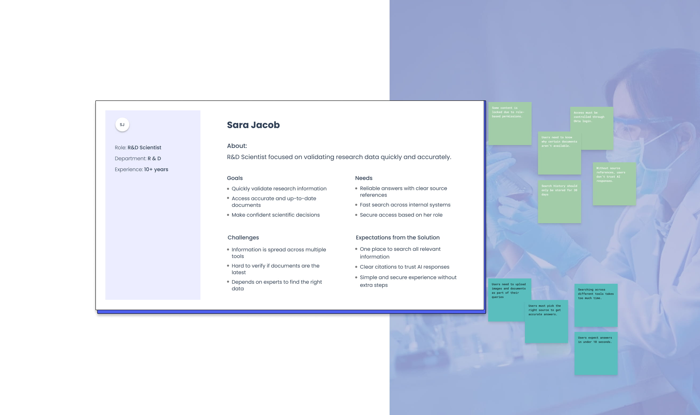
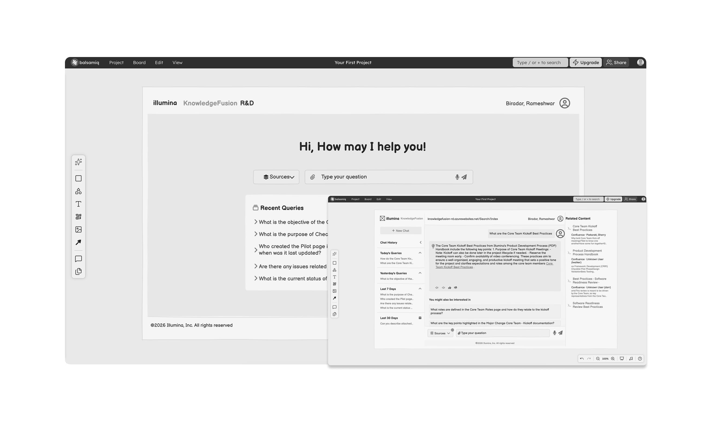
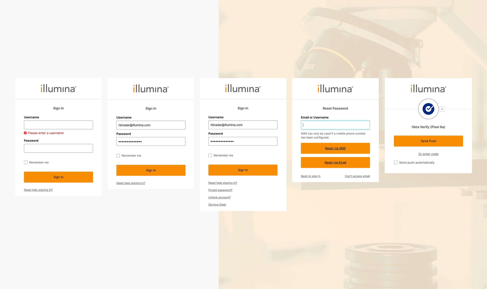
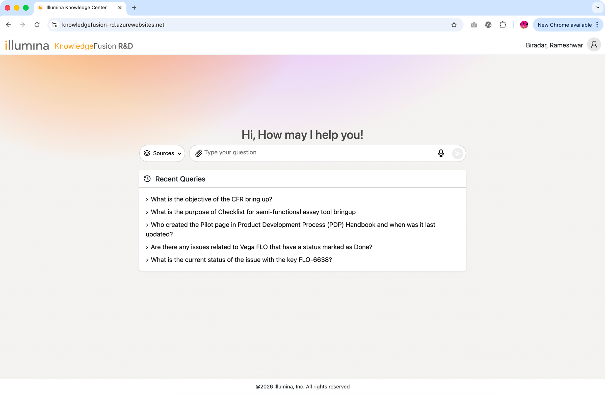
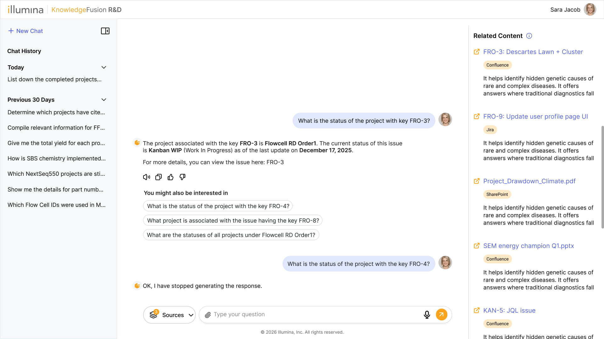
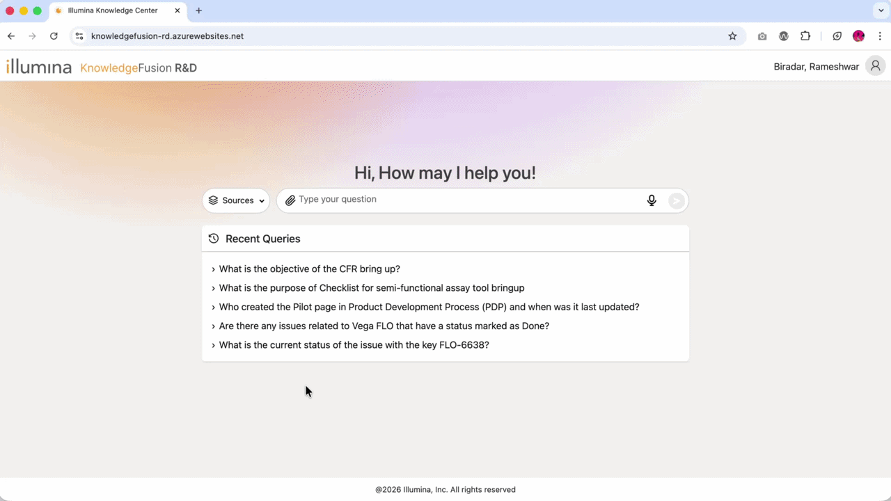

Illumina is a global biotechnology company known for its DNA sequencing and genomic analysis solutions. Their products are used by scientists, researchers, and healthcare organizations around the world.
Illumina wanted one secure AI chat experience that helps employees find accurate answers and documents from multiple internal systems, with clear citations and strict role-based access.
My Role
Senior Product Designer
Team Structure
Full Stack Designer (me), PM, Architect, 3 Engineers
Tools
Figma, FigJam, Claude AI, GitHub Copilot
Timeline
8 weeks (Discovery to Launch)
Year
2025–2026
Discover
The Challenge
Users needed to access critical enterprise data stored across multiple internal systems — Teamcenter, Confluence, Jira, and SharePoint. Due to fragmented information, finding accurate and up-to-date details was slow, inefficient, and often required switching between tools.
At the same time, strict role-based access controls and security policies made it challenging to surface the right information without compromising data protection.
Key Problems Identified
Users had to search across multiple systems to find a single piece of information
Significant time was spent validating whether information was correct and up to date
High dependency on subject-matter experts to locate the right data
Lack of trust in results due to missing or unclear source references
Strict role-based access limited visibility, often without clear explanation to users
Need to support fast responses (under 10 seconds) without compromising security
Requirement to handle multiple input types — text, voice, and document uploads
Architecture Collaboration
I worked directly with the AI solution architect to understand the backend — how queries were authenticated, how role-based access was enforced at the data layer, and what the RAG system could and couldn't do. Understanding these constraints early meant my design decisions held up in production.

Define
Defining the Problem
To validate our hypotheses quickly, we started by creating user personas and focusing on the core user journey. Our goal was to understand behavior patterns and identify friction points before investing in a full-featured solution.

Designed for security first — then for speed
The flow starts before the product even loads. Because KnowledgeFusion handles sensitive R&D data across role-restricted systems, every session begins with Okta authentication — validating identity, MFA, and role permissions before issuing a scoped token to the app.
Authentication Flow
Okta handles identity and MFA. Once verified, a JWT with the user's role scope is passed to the app — determining which sources, documents, and content are visible from the moment the interface loads.
Main App Flow
Once inside, users land on a home screen showing recent searches. The left sidebar holds chat history and a New Chat button. From search onwards, the flow branches across source filtering, document access, follow-ups, and edge cases — all handled within the same conversation thread.
Ideate
I wireframed to better understand the structure before moving into visual design.
I started web-first, mapping the core flow: source selection → query input → AI response with citations → follow-up questions → related content. Mobile adaptation came after the core interaction was validated.
Key States I Designed
Empty search with source selector
Loading / thinking state
Result with inline citations
Follow-up question thread
Access-denied state (invisible but clear)
Error and fallback state
Testing insight → Design change
I tested the lo-fi structure with two stakeholders before moving to hi-fi. The key finding: users wanted to see the source of an answer before reading the answer — not after. I moved citations to sit adjacent to the response. This single structural change became the most important trust mechanism in the final design.

Design
Login to response — the full journey
Log In Screens
Users log in with their enterprise credentials. A 6-digit verification code sent to their email completes MFA. The "Have problems?" contact link ensures no one gets stuck at the gate.

Home Page
After login, users land here. A centred search bar with optional Sources filter, mic for voice input, and attach for files or images. Recent Queries below give instant access to previous searches — no blank slate.

AI Response Detail Page
The AI answer appears in the main panel with inline reference links — every claim is sourced. Users can see exactly which documents the answer came from before acting on it. Trust is built into the layout, not added as a footnote.

See the Experience in Action
Field service engineers needed answers on-site on mobile. After validating the core web experience, I adapted the layout for mobile — collapsing the source selector into a bottom sheet, optimising touch targets, and reducing the AI response to its most actionable form.

Impact
Impact
The final product, a unified AI-powered search experience, exceeded initial expectations and received overwhelmingly positive feedback from both users and stakeholders.
Measurable Results:
99% reduction in answer time — from 30–60 minutes down to under 6 seconds
Unified Teamcenter, Confluence, Jira, and SharePoint — into one AI-powered interface
Zero access-denied friction — security was invisible until it needed to be visible
86% user satisfaction score for the authentication experience
"I used to spend half my morning hunting for documents across three different tools. Now I just ask and I get the answer with the source right there."
— R&D Scientist, Illumina
Reflections
Conclusion & Learnings
Our goal was to make it easier for employees to find and use enterprise knowledge. We achieved this by building a single AI-powered search experience that replaced the need to jump between multiple tools.
This project taught me how AI agents behave — how the system responds and how large language models work in practice. I gained a deeper understanding of data security and authentication processes, especially using Okta.
Key Learnings
How AI agent behavior and LLM responses shape user experience
Data security and Okta authentication processes
Close collaboration with engineering and architecture ensured technical feasibility
Applied heuristic evaluation to improve usability and guidance
Scalable UX foundations make future growth easier
More Case Studies
Retailer App
Simplifying Multi-Level Reviews
Streamlining approvals across roles to reduce delays and improve decision-making.